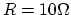
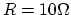
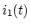
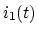

Instructions
The Problems

The values of  ,
,  and
and  of the circuit below are such that
of the circuit below are such that
 ,
, and also . Find the
phase difference between the input voltage
,
, and also . Find the
phase difference between the input voltage  and the output
voltage
and the output
voltage  . Which of the two voltages is leading? by how much?
. Which of the two voltages is leading? by how much?

The one-port network in the circuit below is a resistor network with some
unknown energy sources. When the switch is in position 1, the ideal ammeter
reads 3A (DC), when the switch is in position 2, the ideal voltmeter reads 9V
(DC), with polarity as shown. Find the output voltage  across the
inductor with
across the
inductor with  after the switch is turned into positon 3 at
after the switch is turned into positon 3 at  .
.

In the circuit below,  ,
,  ,
,  ,
,  ,
,
,
,  , and before the switch S closes at
, and before the switch S closes at  , the circuit is
already in steady state. Find the current  through for .
(Hint: as current through an inductor cannot change instantaeously, the
inductor can be treated as a current source right after the switch is closed.)
, the circuit is
already in steady state. Find the current  through for .
(Hint: as current through an inductor cannot change instantaeously, the
inductor can be treated as a current source right after the switch is closed.)